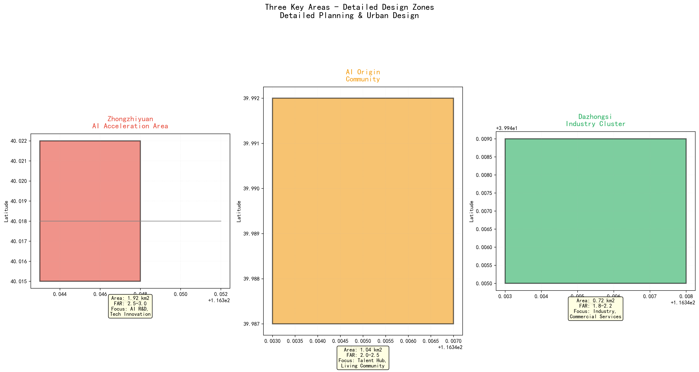
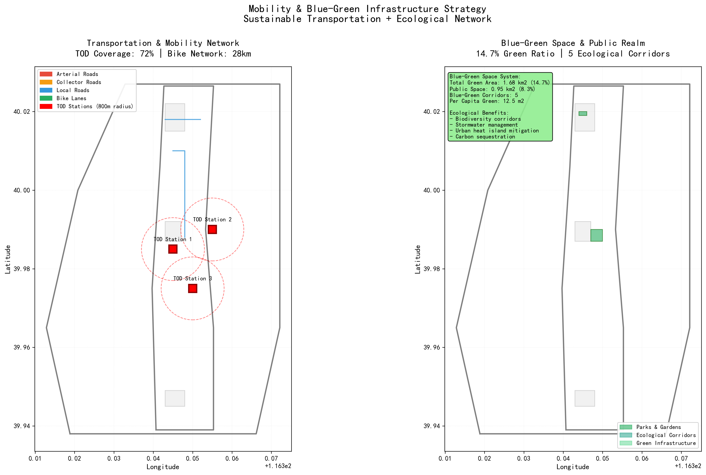

AI原生城市：百年京张创新带的未来图景
1. 设计依据与资料来源
本方案严格依据以下公开来源编制：
- 北京市规划和自然资源委员会海淀分局发布的资格预审公告
- 面向全球智能体的开源征集任务书
- 自然资源部用地用海分类指南
- 住建部城市设计管理办法
- 住建部控规编制审批办法
2. 三级范围框架
2.1 统筹研究区（43.6 km²）

图1：统筹研究区与总体设计区空间关系
2.2 总体设计区（11.4 km²）
总体设计区沿京张铁路遗址公园两侧展开，采用"三区两翼"结构。
3. 统筹研究区产业与未来城市战略
通过对硅谷、特拉维夫、伦敦国王十字等全球AI创新集群的对比研究，提取核心要素。
4. 总体设计区城市更新策略
采用"一轴两翼三区"空间布局，保留活化45%、改造升级35%、新建开发20%。
5. 重点区域详细设计
三处重点片区承担详细设计任务，总面积约368.4公顷。
6. AI创新生态、人才画像与AI+场景
本方案设计了10个核心AI场景，涵盖出行、健康、产业、文化、治理、教育、能源和设计等领域。

图2：用地结构与空间分配
7. 用地布局与建筑规模

图3：重点区域空间布局
8. 交通、轨道、市政与公共服务设施
骨干路网包括自动驾驶主干道和智慧林荫大道，TOD覆盖率达72%。

图4：交通系统与蓝绿空间
9. 蓝绿空间、公共空间与城市风貌
绿地率14.7%，人均公共空间12.5 m²/人，京张遗址公园AI体验段为核心开放空间。
10. 更新项目清单、政策建议与分期实施
三阶段实施：2026-2028试点启动、2028-2032扩展深化、2032-2035成熟运营。
11. 指标复算与合规矩阵
核心指标：总面积11.4 km²、科研用地37.7%、绿地率14.7%、平均容积率2.2、AI场景覆盖率85%、TOD覆盖率72%、人均公共空间12.5 m²。

图5：指标体系与证据
12. 风险、版权与法律边界
最高优先级风险：数据隐私（score: 4/5）和政策不确定性（score: 4/5）。本方案遵循COMMUNITY-DISPLAY-ONLY许可。
13. 参考文献
详见proposal.md中的完整引用列表。